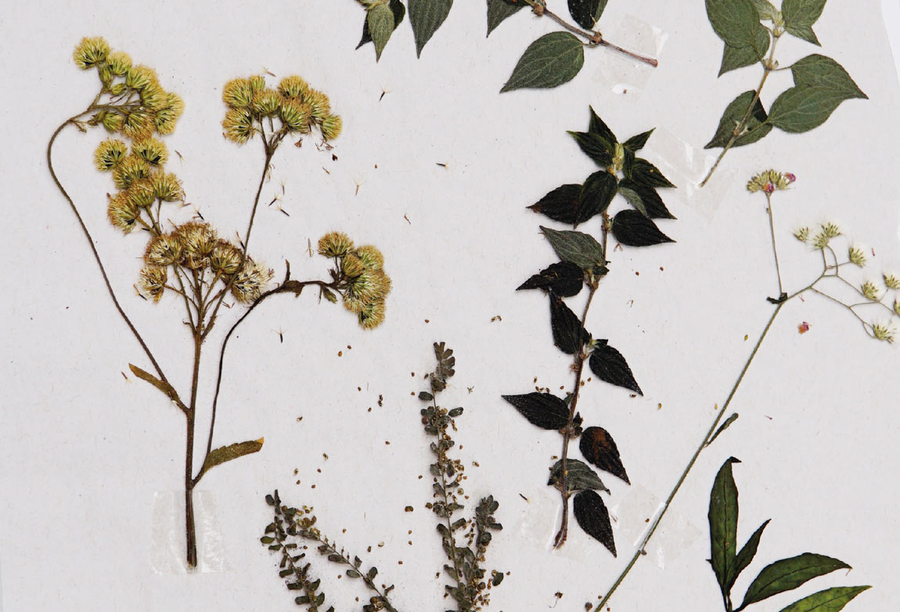
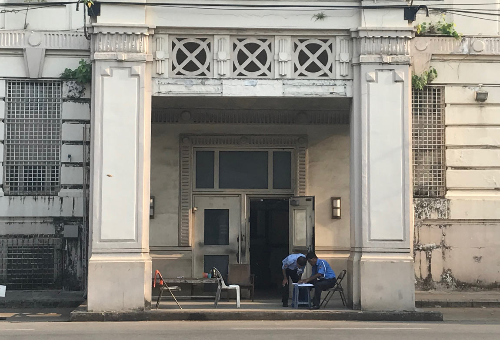
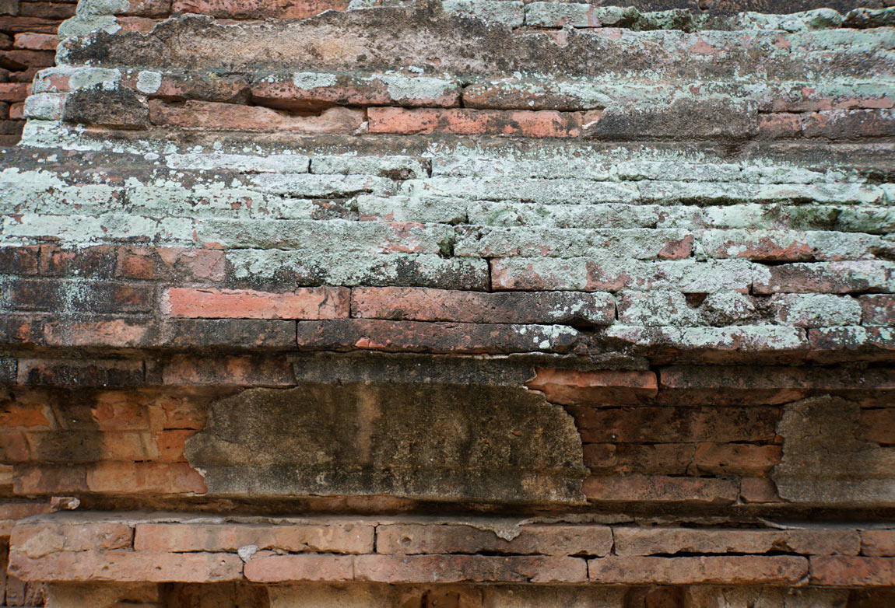
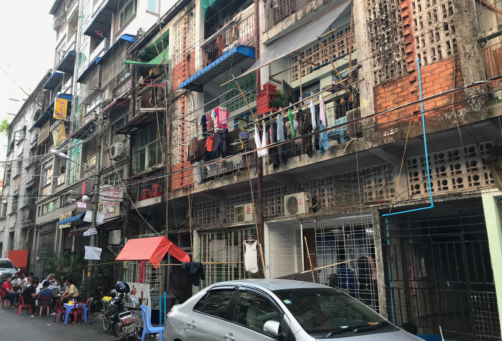
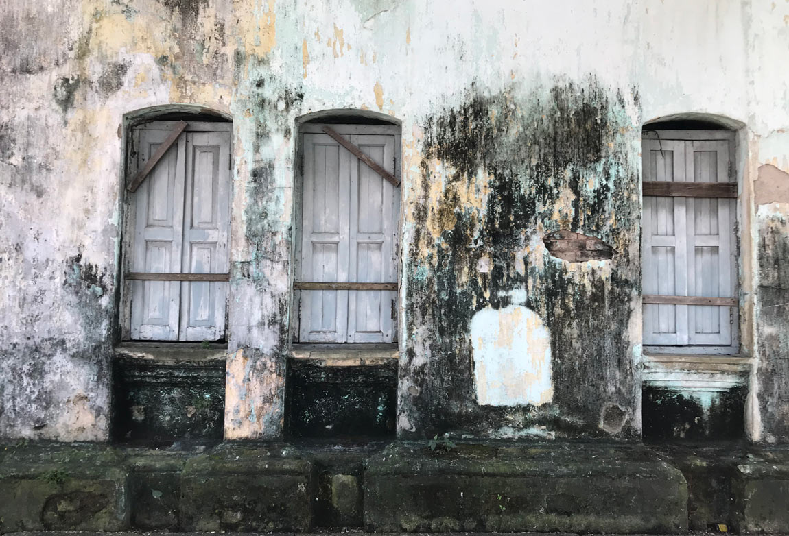
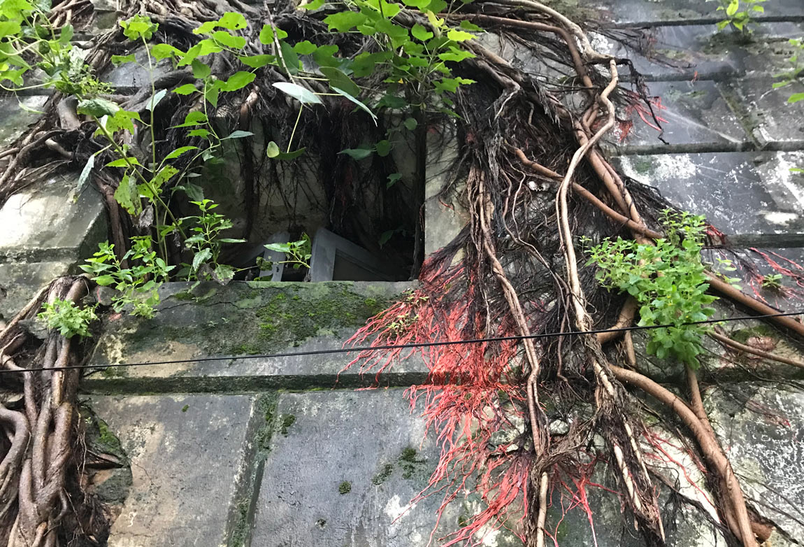
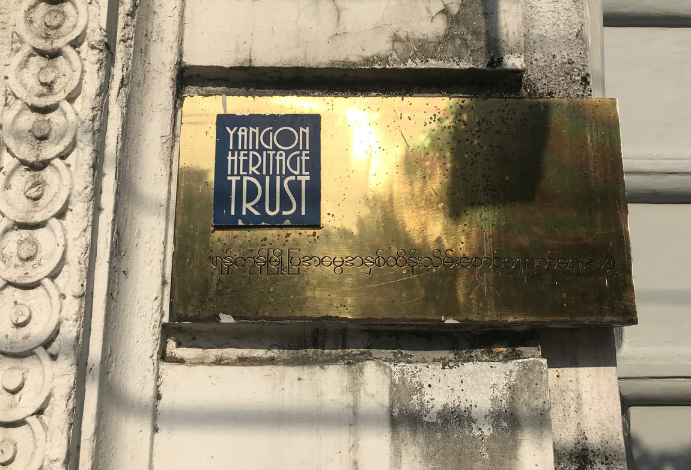
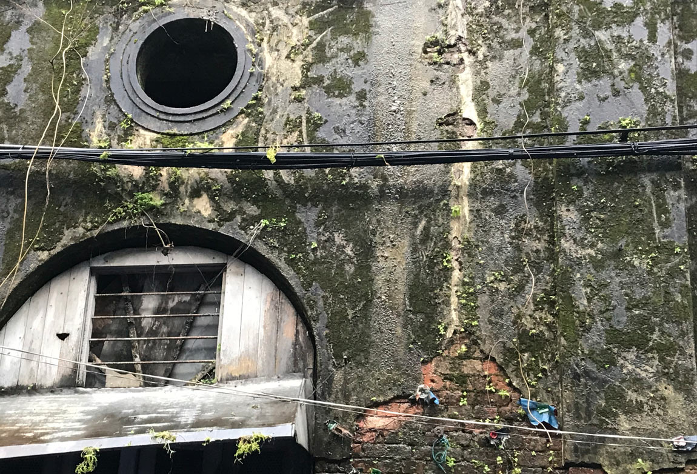

Architecture, weeds and the
chemical calculus of decay
Decay is a building process; it has a chemical slant and a differential dynamic distribution. The process of decay builds new states of extensity, affect, magnitude and even integrity from and out of a system or formation without nullifying or reforming it. The decaying formation is disposed of its chances to die or to live wholesomely, to be abolished, reformed or delivered to its origin. For this reason, decay is an irresolute process of building that potentiates architectures which, while infinitely open to new syntheses and transformations, cannot undergo complete annulment or return to their original form.1
Colonial infrastructure
Yangon has one of the largest remaining collections of colonial buildings in the world. Most were built in the late nineteenth and early twentieth centuries to house the governors, administrators, entrepreneurs and financiers of British Burma. The buildings were constructed of brick or stone, conveying the impression that “London had been transplanted into a tropical landscape” and establishing colonial authority as permanent and solid.2
Generative decay
  After Burma’s independence in 1948, the colonial building stock was nationalised and used by the military or occupied by Burmese citizens. Neglect, lack of maintenance and exposure to the tropical climate and annual monsoon rains saw decay set in, enabling the chemical mineralogy of bricks and mortar to interact with the liveliness of the monsoon and life to thrive on and beneath their surface.
Weeds and the ecologies of decay
"These plants have no names, they are natural."3
Decay was augmented by birds, rats and other species who inadvertently dispersed seeds adaptive to limestone-rich alkaline mortars. Mosses appeared, staining brickwork green. Delicate flora began to sprout from ledges, window sills and cracks. Roots and tendrils clung to facades and up pilasters. Exuberant plant growth followed moisture saturated bricks up broken downpipes. Aerial ficus roots entwined themselves around waterlogged columns. Shrubs protruded from canopies and rooflines. Over time relatively stable plant associations that defied the botanical order of the city took hold.
The Yangon Heritage Trust
After Aung San Suu Kyi’s National League for Democracy won its first parliamentary seat in 2012, western sanctions against Myanmar were lifted and foreign investment poured into the country. The colonial buildings of downtown Yangon suddenly faced a new threat, not from chemical reactions and plant growth, but from the return of capitalism and the pressures of development. This resulted in the establishment of the Yangon Heritage Trust to promote heritage-led planning and building conservation as a central tenet in the cultural and economic reimagining of the city.
Cycles of eradication and return
As Yangon’s colonial buildings are reimagined and reclaimed, the first victims are the weeds growing on their surfaces. Buildings are sealed, made whole again and imagined separations of nature from culture are reasserted. But while these interventions might hold off the processes of weathering and decay for as long as their benefactors care to sustain them, the monsoon will eventually prevail. Cracks, efflorescence and weeds will return, commemorating what could have lasted, or was about to happen, but did not. Their unyielding persistence will be a potent reminder that buildings are composed of and radically open to what surrounds them - air, moisture, carbon, salts, chemicals, birds, insects and plants, that cohere for only brief moments, and always provisionally, into social projects.
1 R. Negarestani, ‘Undercover Softness: An Introduction to the Architecture and Politics of Decay’, Collapse, Philosophical Research and Development, vol. 6, 2010, p. 386.
2 E. Larkin, Finding George Orwell in Burma, London, Granta, 2011, p. 94)
3 Residen of Yangon, September 2019.
Text by Lindsay Bremner.
Photographs and video by Lindsay Bremner.
Design by Jonathan Cane.
Samples of weeds growing on the
surfaces of buildings in Yangon collected
in September 2019. Collection and
photographs by Lindsay Bremner.